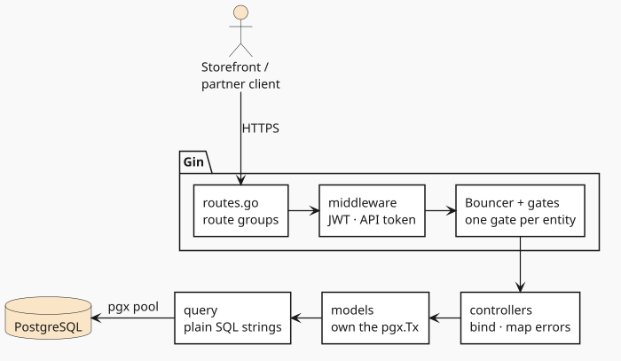
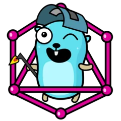
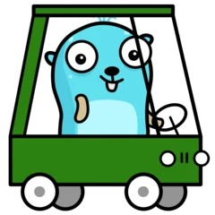
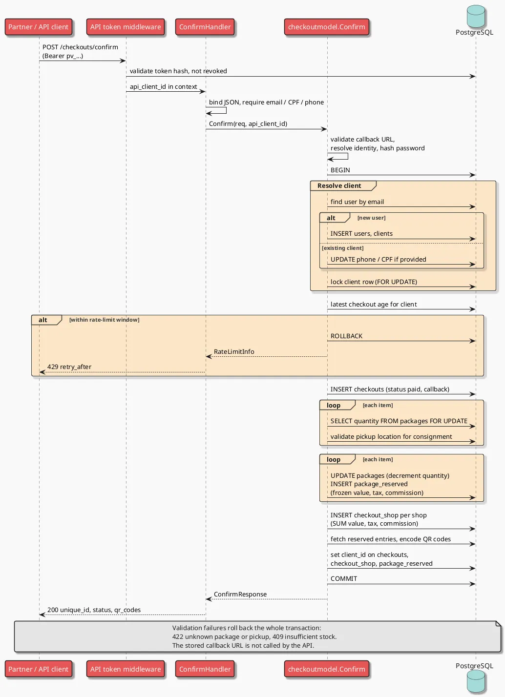
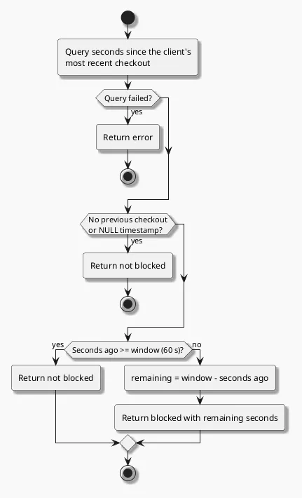
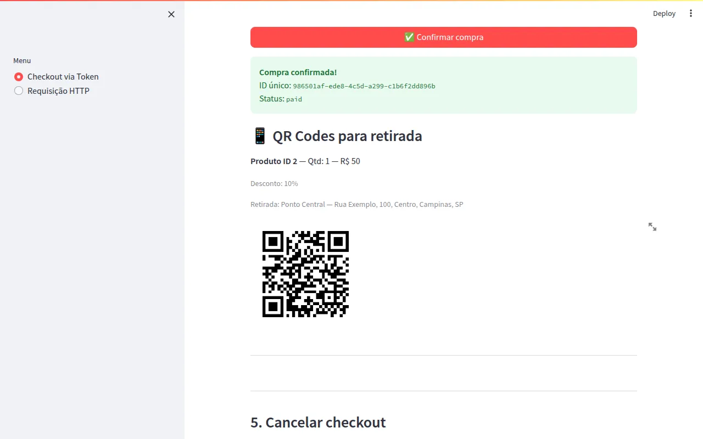

- Role
- Backend author and the agent workflow around it; storefront frontend by Gabriel and Kerlon
- When
- Mar – Jun 2026
- Stack
- Go, Gin, pgx/v5, PostgreSQL, gin-jwt, shopspring/decimal
What it is
A rewrite of an earlier Laravel backend. It covers the catalogue, consignments, checkout, stock reservation, per-shop earnings and withdrawals with admin approval. Requests go through Gin middleware, a controller, a model that owns the transaction, and plain SQL strings run through a pgx pool. No ORM.


Design decisions
- SQL in the open, transactions in the model. Every lock and every
WHEREis visible in review, and one function holds one invariant fromBEGINtoCOMMIT. - Lock the row that owns the rule. The client row for rate limits, package rows for stock, the shop row for balance. Requests for the same client or shop queue up; unrelated ones don't.
- Freeze money at write time. Each checkout stores the shop's value, tax and commission, so later price changes never rewrite earnings. Money is
decimal, never float. - Checkout idempotency took three tries. A client-supplied key mixed up two jobs; a content hash had no notion of time, so buying the same thing a week later returned the old QR code; the current version locks the client row and answers a second checkout within 60 s with 429.
Code overview
A conventional layered service. Here is one request, a partner checkout, going through each layer:

diagrams/pvapi.puml).Gophers from the Free Gophers Pack by Maria Letta (fork), licensed CC0. Go gopher designed by Renée French.
Routes

Route groups per role; the partner checkout group requires an API token.
checkouts := t.Group("/checkouts")
checkouts.Use(apitokenmw.Require(pool))
{
checkouts.POST("/confirm", checkout.ConfirmHandler(pool))
checkouts.DELETE("/:unique_id", checkout.CancelHandler(pool))
}Middleware
Partner tokens are pv_ plus 64 hex characters, checked against a stored SHA-256 hash.
func Require(pool *pgxpool.Pool) gin.HandlerFunc {
return func(c *gin.Context) {
auth := c.GetHeader("Authorization")
if auth == "" {
c.AbortWithStatusJSON(401, gin.H{
"success": false,
"message": "missing authorization header",
})
return
}
if !strings.HasPrefix(auth, "Bearer ") {
c.AbortWithStatusJSON(401, gin.H{
"success": false,
"message": "invalid authorization header format",
})
return
}
token := strings.TrimPrefix(auth, "Bearer ")
if !strings.HasPrefix(token, apitokenmodel.TokenPrefix) {
c.AbortWithStatusJSON(401, gin.H{
"success": false,
"message": "invalid token type",
})
return
}Gates
Authorization is one gate per entity, picked by path prefix by a single Bouncer. A route with no gate is easy to spot.
func (s *ShopGate) Dispatch(
u User,
r Resource,
) (bool, error) {
id := r.Params.ByName("shop")
r.Metadata["id"] = id
if r.Method == "GET" {
if r.EndPoint("/checkouts") {
return s.Checkouts(u, r)
}
if r.EndPoint("/saques") || r.EndPoint("/saques/:saque") {
return s.Saques(u, r)
}
if r.EndPoint("/contasbancarias") {
return s.BankAccounts(u, r)
}
if id == "" {Controllers

Bind and validate the request, call the model, and turn domain errors into status codes, like 429 for a checkout too soon after the last one.
func ConfirmHandler(
pool *pgxpool.Pool,
) func(c *gin.Context) {
return func(c *gin.Context) {
var req checkoutmodel.ConfirmRequest
if err := c.ShouldBindJSON(&req); err != nil {
util.HandleBadRequest(c, err)
return
}
// Require at least one identity field (client_email, cpf, or telephone)
if strings.TrimSpace(req.ClientEmail) == "" &&
strings.TrimSpace(req.CPF) == "" &&
strings.TrimSpace(req.Telephone) == "" {
c.AbortWithStatusJSON(400, gin.H{
"success": false,
"message": "Informe email, CPF ou telefone para continuar",
})
return
}
apiClientID := apitoken.GetAPIClientID(c)
resp, err := checkoutmodel.Confirm(
c.Request.Context(),
pool,
req,
apiClientID,
)
if err != nil {
var rlInfo *checkoutmodel.RateLimitInfo
if errors.As(err, &rlInfo) {
c.AbortWithStatusJSON(429, gin.H{
"success": false,
"message": rlInfo.Message,
"retry_after": rlInfo.RetryAfter,
})
return
}
switch {Models
The model opens the transaction and holds the invariant: lock the client row, then check the cooldown.
tx, err := pool.Begin(ctx)
if err != nil {
return resp, fmt.Errorf("failed to begin transaction: %w", err)
}
defer func() { _ = tx.Rollback(ctx) }()
// Create or get client (synchronous, inside transaction)
clientID, _, err := clientmodel.Create(
ctx, tx,
ci.ClientName, ci.EffectiveEmail,
passwordHash,
ci.NormalizedPhone,
ci.ValidatedCPF,
)
if err != nil {
return resp, fmt.Errorf("failed to create/resolve client: %w", err)
}
// For existing clients, update only the fields that were actually provided
if ci.NormalizedPhone != "" || ci.ValidatedCPF != "" {
if _, err := tx.Exec(ctx, query.UpdateClientFieldsQuery, clientID, ci.NormalizedPhone, ci.ValidatedCPF); err != nil {
return resp, fmt.Errorf("error updating existing client fields: %w", err)
}
}
// Serialize checkouts for this client with row-level lock
_, err = tx.Exec(ctx, query.LockClientRowQuery, clientID)
if err != nil {
return resp, fmt.Errorf("failed to lock client row: %w", err)
}
// Rate-limit check: if last checkout within 60 seconds, return 429
remaining, isBlocked, err := checkRateLimit(ctx, tx, clientID)
if err != nil {Queries
SQL lives as plain strings, one file per entity, so every lock is visible in review.
LockClientRowQuery = `
SELECT id FROM clients WHERE id = $1 FOR UPDATE
` CheckRateLimitQuery = `
SELECT EXTRACT(EPOCH FROM (NOW() - chk.processed_at))::bigint AS seconds_ago
FROM checkouts chk
WHERE chk.client_id = $1
ORDER BY chk.processed_at DESC
LIMIT 1
`History
Numbers from the README, per month of 2026:
| Month | Commits | Migrations (total) | HTTP test suites (total) |
|---|---|---|---|
| Mar | 109 | 7 | 0 |
| Apr | 94 | 9 | 1 |
| May | 215 | 31 | 17 |
| Jun | 71 | 53 | 19 |
From late May I ran it with coding agents: 64 written specs, guardrails in AGENTS.md, and skills for tests and diagrams. I wrote the specs and the guardrails; the agents implemented them under tests. The 19 test suites run black-box HTTP requests against a real PostgreSQL.
More pictures



